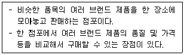
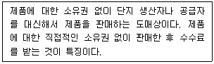
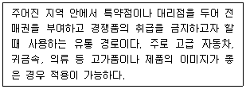
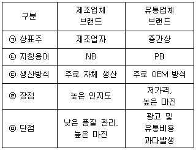
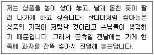
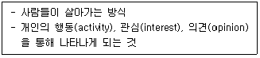
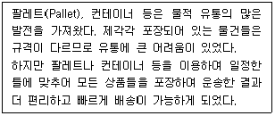
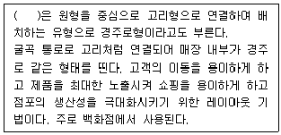
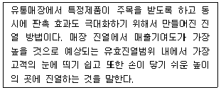
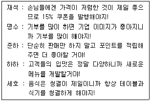

유통관리사-3급 (2018-07-01 기출문제)
1과목: 유통상식
1. 편의품에 대한 설명으로 가장 옳지 않은 것은?
- 구매빈도가 높아 상품회전율이 높은 상품이다.
- 상품의 단가가 낮으며 판매마진율 또한 낮은 상품이다.
- 소비자가 습관적으로 구매하는 상품이다.
- 점포를 선택하는데 신중히 검토하지만, 상표에 대한 관심은 낮은 상품이다.
- 우유, 비누, 치약과 같은 생활필수품이 편의품에 해당된다.
(정답률: 79%)

2. 오프라인에서 긴 유통경로구조를 갖게 되는 경우에 해당하는 것은?
- 지리적으로 가깝게 위치하는 경우
- 제품이 부패하기 쉬운 경우
- 제품 표준화가 높은 경우
- 제품의 기술적 복잡성이 높은 경우
- 평균 주문단위가 대량인 경우
(정답률: 34%)
3. 회원제 도매 클럽의 특성으로 옳지 않은 것은?
- 연회비운영
- 가격할인
- 창고형매장
- 셀프서비스
- 비식품류전용 판매
(정답률: 67%)
4. 구매시점(POP : point of purchase)광고에 대한 설명으로 가장 옳지 않은 것은?
- 매장을 찾아온 손님에게 즉석에서 호소하는 광고 종류를 말한다.
- POP는 소매점 점포 내부에 설치하는 광고를 말하며, 점두나 매장주위의 광고는 포함하지 않는다.
- 매장 안에 설치한 디스플레이는 POP에 해당된다.
- 매장 안에 걸어 놓은 포스터는 POP에 해당된다.
- 상품 옆에 걸어놓은 상품설명 안내판은 POP에 해당된다.
(정답률: 78%)
5. 아래 글상자 지문 설명에 공통으로 해당되는 용어로 가장 옳은 것은?

- 오픈 샵(open shop)
- 멀티 샵(multi shop)
- 클로즈드 샵(closed shop)
- 브랜드 샵(one brand shop)
- 노브랜드 샵(no brand shop)
(정답률: 80%)
6. 유통산업발전법[시행 2018.1.18] [법률 제14532호, 2017.1.17, 타법개정]에서 정의하고 있는 체인사업의 종류로 가장 옳지 않은 것은?
- 임의가맹점형 체인사업
- 프랜차이즈형 체인사업
- 직영점형 체인사업
- 산학협동 체인사업
- 조합형 체인사업
(정답률: 77%)
7. 인스토어 마킹(instore marking)을 적용할 수 있는 상품으로 가장 옳지 않은 것은?
- 생선
- 소고기
- 양배추
- 통조림
- 고구마
(정답률: 89%)
8. 완구, 사무용품, 전자제품처럼 어떠한 특정제품을 전문적으로 그리고 대규모로 취급하여 저렴하게 판매하는 점포의 유형을 일컫는 단어로 옳은 것은?
- 양판점
- 편의점
- 아웃렛
- 카테고리 킬러
- 회원제 도매클럽
(정답률: 77%)
9. 유통경로의 기능을 조성기능, 물적유통기능, 소유권 이전기능 등으로 구분한다고 할 때, 보기 중 잘못 짝지어진 것은?
- 시장금융 기능 → 조성기능
- 판매기능 → 소유권이전기능
- 하역 → 물적유통기능
- 구매기능 → 소유권이전기능
- 포장 기능 → 조성기능
(정답률: 58%)
10. 창고나 물류센터에서 수령한 제품을 재고로 보관하지 않고 즉시 소매점으로 배송하는 시스템을 지칭하는 용어로 옳은 것은?
- JIT(Just In Time) 시스템
- 크로스 도킹(Cross Docking) 시스템
- 자동발주시스템
- 전사적 물류관리 시스템
- 창고관리 시스템
(정답률: 37%)
11. 고객관계관리(CRM : customer relationship management)에 관한 설명으로 가장 옳지 않은 것은?
- 고객의 평생 가치를 극대화 한다.
- 기존고객을 유지하고 우량고객 이탈을 방지한다.
- 일대 다수(一對 多數) 마케팅에 매우 효율적인 기법이다.
- 상향판매(upselling)를 통해 수익성이 높은 상품을 판매할 수 있게 한다.
- 기업중심적이라기 보다 고객 중심적인 상품을 개발할 수 있게 한다.
(정답률: 55%)
12. 아래 글상자가 설명하고 있는 도매상으로 옳은 것은?

- 완전 서비스 도매상
- 대리 도매상
- 생산자 도매상
- 상인 도매상
- 한정 서비스 도매상
(정답률: 86%)
13. 직접 유통과 관련된 설명으로 옳지 않은 것은?
- 도매상과 중간상들이 부당하게 높은 이윤을 취하고 있다는 생산자의 불만은 직접유통이 생겨나게 한 하나의 요인이다.
- 교통의 발달로 직접 유통이 더욱 원활해졌다.
- 유통경로 상에서 하나 이상의 유통기관을 거치는 것을 직접 유통이라 한다.
- 생산자가 소비자에게 직접 제품을 유통시키는 것을 의미한다.
- IT의 발전은 유통 경로를 단축시키는 요인이 되었다.
(정답률: 69%)
14. 아래 글상자가 설명하는 유통경로는 무엇인가?

- 개방적 유통 경로
- 주문제작 유통 경로
- 선택적 유통 경로
- 복수 유통 경로
- 전속적 유통 경로
(정답률: 64%)
15. 잠재고객이 인정하는 제품이나 서비스의 혜택을 판매원이 정리하여 언급하면서 고객의 구매결심을 유도하는 판매종결기법으로 옳은 것은?
- 시험종결기법
- 요약종결기법
- 대안종결기법
- 핵심종결기법
- 추정종결기법
(정답률: 48%)
16. 상품의 기본 진열 원칙인 AIDCA의 순서별 요소로 가장 옳지 않은 것은?
- A : Attention(주의)
- I : Interest(관심)
- D : Desire(욕망)
- C : Conviction(확신)
- A : Attraction(매력)
(정답률: 64%)
17. 다음 중 마진보다는 회전율에 더 초점을 두어 영업하는 소매업태들로만 구성된 것은?
- 카테고리킬러, 할인점, 전문점
- 창고형클럽, 하이퍼마켓, 백화점
- 할인점, 하이퍼마켓, 카테고리킬러
- 편의점, 백화점, 우편주문판매
- 하이퍼마켓, 백화점, 할인점
(정답률: 74%)
18. 제조업체 브랜드와 유통업체 브랜드를 비교한 내용으로 가장 옳지 않은 것은?

- ㉠
- ㉡
- ㉢
- ㉣
- ㉤
(정답률: 63%)
19. 무점포 소매상의 형태로 옳지 않은 것은?
- 통신 판매
- 텔레마케팅
- TV홈쇼핑
- 자동판매기
- 파워센터(power center)
(정답률: 68%)
20. POS 시스템의 활용분야로 가장 옳지 않은 것은?
- 고객관리
- 품질관리
- 진열관리
- 종업원 관리
- 상품구매 및 계획관리
(정답률: 28%)
2과목: 판매 및 고객관리
21. 고객이 구매를 많이 하도록 자극하기 위해, 각 재고유지단위(SKU : stock keeping unit)를 매장 선반이나 진열대에 어떠한 방식으로, 즉 어떻게, 어디에 진열해야 하는지 보여주는 다이어그램이자 관련시스템은 무엇인가?
- Gondola
- CRM
- RFID
- POS
- Planogram
(정답률: 58%)
22. 다음은 어떤 진열방식을 선호하는 슈퍼마켓 사장의 인터뷰 내용이다. 이 진열 종류는 무엇인가?

- 색상별 진열
- 가격대별 진열
- 수직적 진열
- 적재 진열
- 전면 진열
(정답률: 67%)
23. 매장 내에서 활용하는 사인물(signage)을 효과적으로 이용하는 방법으로 옳은 것은?
- 사인물과 그래픽은 매장 이미지와는 관련이 없으므로 색깔, 분위기 등을 조화시킬 필요는 없다.
- 진열된 상품과 반드시 연관성이 있어야 하고, 상품이 바뀌면 사인물도 새롭게 바꾸어야 한다.
- 소비자들에게 많은 정보를 제공하기 위해 최대한 많은 내용과 정보를 기재한다.
- 기재하는 글자체나 글자 크기는 전혀 중요하지 않다.
- 소리나 영상이 나오는 디지털 사인물은 기존 프린트 사인물보다 고객을 혼란스럽게 하므로 절대 사용하면 안 된다.
(정답률: 77%)
24. 화가 난 고객이 생겼을 때, 고객에 대한 판매자의 서비스 커뮤니케이션으로 옳지 않은 것은?
- 문제가 해결될 때까지 고객관리부서에서 해결할 것이므로 판매자는 더 이상 신경 쓸 필요가 없다.
- 고객 의견에 찬성을 하고, 그런 내용을 자신에게 알려준 것에 대해 감사를 표시 한다.
- 고객의 편에 있다는 것을 이해시킨다.
- 먼저 사과한 후에, 일어난 일에 대해 나중에 전후사정을 이야기 하도록 한다.
- 고객의 문제가 해결되었다면 고객에게 감사함을 표현한다.
(정답률: 86%)
25. 촉진믹스에 대한 내용으로 옳지 않은 것은?
- 마케팅 시 활용할 수 있는 촉진믹스는 다양하므로 마케팅 목표를 효과적으로 달성하기 위해 하나만 독립적으로 사용하는 것보다는 여러 가지를 상호보완적으로 사용하는 것이 좋다.
- 광고를 통해 불특정 다수에게 제품, 서비스에 대해 알릴 수 있다.
- 광고는 고객에게 전달할 수 있는 정보의 양이 무궁무진하고 시간도 제한되어 있지 않다는 장점이 있다.
- 인적판매는 고객1인당 촉진비용이 높은 편이다.
- PR의 대표적인 수단으로 홍보, 스폰서십, 사보 등이 있는데 홍보는 독립적인 3자인 언론을 통해 정보를 전달하므로 신뢰성이 높다.
(정답률: 50%)
26. 여러 가지 변수에 의해 구매고객을 세분화할 수 있다. 다음은 어떤 기준으로 세분화 하였는가?

- 지역에 의한 기준
- 사회계층에 의한 기준
- 구매계기에 의한 기준
- 라이프스타일에 의한 기준
- 인구통계에 의한 기준
(정답률: 83%)
27. 마케팅 믹스인 4P의 구성요소가 아닌 것은?
- 흐름(process)
- 가격(price)
- 유통(place)
- 촉진(promotion)
- 제품(product)
(정답률: 70%)
28. 고객이 특정 기업과 평생 거래를 할 경우, 그 기업이 고객으로부터 실현할 수 있는 총 이익의 현재가치를 무엇이라 하는가?
- 고객관계관리(CRM)
- 고객평생가치
- 고객충성도
- 고객수익성
- 가치전달 네트워크
(정답률: 58%)
29. 자기가 받은 전화를 다른 담당자에게 돌려주는 경우가 있다. 이 경우 응대 방법으로 가장 옳지 않은 것은?
- 전화를 돌려받을 사람의 이름을 파악한다.
- 전화를 돌려줄 때 송화구를 막고 바꿔주는 것이 좋다.
- 전화 받을 사람이 즉시 받을 수 없는 경우 받을 때까지 기다린다.
- 만약 전화를 돌려줬는데 통화가 되지 않을 경우를 대비해 담당자의 직통번호를 알려준다.
- 전화를 돌려받았을 때 돌려받은 담당자는 자신을 상대방에게 소개하는 것이 좋다.
(정답률: 82%)
30. 다음 글에서 볼 수 있는 포장 합리화의 원칙은?

- 대형화, 대량화의 원칙
- 집중화, 집약화의 원칙
- 분산화, 다양화의 원칙
- 규격화, 표준화의 원칙
- 개별화, 신속화의 원칙
(정답률: 63%)
31. 기업의 마케팅 전략을 구축하기 위한 환경분석도구 중 3C 분석의 구성요소로 옳은 것은?
- Customer, Competitor, Company
- Consumer, Competitor, Convenience
- Convenience, Competitor, Company
- Customer, Communication, Company
- Consumer, Competitor, Communication
(정답률: 23%)
32. 구매 의사결정에 영향을 미치는 심리적 요인에 해당되는 것은?
- 소비자가 속한 문화(culture)
- 가입한 커뮤니티(community)
- 자녀를 포함한 가족(family)
- 준거집단(reference group)
- 사회적 자아 이미지(self image)
(정답률: 53%)
33. 다음 글상자의 괄호 안에 들어갈 점포 레이아웃 형태의 명칭으로 가장 옳은 것은?

- 혼합형
- 격자형
- 유동형
- 타원형
- 루프형
(정답률: 42%)
34. 판매원과 고객 간 의사소통의 기술 중 말하기에 대한 설명으로 옳지 않은 것은?
- 전문용어, 외국어를 남발하지 않는다.
- 부정형은 권유하는 말로 바꾸어 표현한다.
- 명령형은 의뢰형으로 바꾸어 말한다.
- 의사소통 중 좋은 분위기 유지를 위해 유행어, 속어 등을 적절하게 사용한다.
- 발음을 또박또박 정확하게 한다.
(정답률: 85%)
35. 상품 진열은 고객의 마음속에 있는 구매에 대한 욕구를 자극할 수 있다. 다음 설명하는 상품 진열법은 무엇인가?

- 엔드 매대(end cap)진열
- 황금구역(golden zone)진열
- 윈도우(window) 진열
- 아이디어(idea) 진열
- 행거(hanger) 진열
(정답률: 75%)
36. 브랜드는 하나의 기업이 제품이나 서비스를 식별하기 위해 사용하는 이름, 기호, 디자인 등을 이르는 명칭이다. 현대사회에서 브랜드가 가지는 중요성에 대한 설명으로 옳지 않은 것은?
- 브랜드 이미지 제고는 제품의 이미지를 좋게 만드는 수단이 된다.
- 성공적인 브랜드는 타사와 가격 경쟁을 회피하는데 중요한 수단이 된다.
- 브랜드 자체만으로 상품을 보증해주는 이미지를 제공하기도 한다.
- 브랜드는 상품의 차별화 및 상품 선택 촉진을 유도한다.
- 브랜드는 기업에 있어서 장기적 이익 향상보다 단기적 이익 향상에 큰 영향을 끼친다.
(정답률: 79%)
37. 일반적으로 사람은 자신의 의견을 누군가가 정면으로 부정하거나 반박하면 불쾌해한다. 따라서 고객의 말을 일단은 듣고 나서 반박을 제시하는 “Yes, but” 혹은 “Yes, and” 기법은 무엇에 속하는가?
- 이유전환법
- 간접부정법
- 부메랑화법
- 증거제시법
- 고객응대법
(정답률: 53%)
38. 소매점 판매 및 경영에 대한 설명으로 가장 옳지 않은 것은?
- 상품의 기능이 복잡한 경우에는 사용 설명을 위한 전담판매원을 배치하는 것이 효과적이다.
- 고객의 구매를 촉진하기 위해 종업원 동선은 될 수 있는 한 길게 잡는 것이 좋다.
- 고객은 소매점의 정보를 수용하는 동시에 소매점에게 정보를 제공하는 원천이 되기도 한다.
- 고객에게 상품을 권할 때에는 강요가 아닌 보다 나은 구매를 위해 도와드린다는 기분으로 하여야 한다.
- 고객이 반품을 원하는 경우에는 신속하게 처리하여 고객 만족도를 높이고 추후 재구매율을 증가시키도록 노력해야 한다.
(정답률: 87%)
39. 고객이 구입한 제품을 포장하는 과정과 관련된 내용으로 옳은 것은?
- 포장은 최대한 크고 멋있게 해야 한다.
- 고객의 의사를 일일이 묻는 것보다 알아서 잘 포장한다.
- 선물용의 경우 가격표를 부착한 채 포장하는 것이 원칙이다.
- 고객은 상품을 결정한 후에는 자기 소유로 생각하므로 성의껏 포장한다.
- 상품의 더럽혀진 부분이 있더라도 티나지 않게 포장한다.
(정답률: 78%)
40. 진열과 관련된 일반적인 원칙을 적용시킨 사례로 옳지 않은 것은?
- 보기 좋게 진열하기 위해 크기가 큰 것을 뒤쪽, 작은 것을 앞쪽에 진열하였다.
- 고객이 함부로 손대지 못하게 될 수 있는 한 높은 곳에 진열하였다.
- 비슷한 상품끼리 함께 진열하였다.
- 제품을 풍족하게 배치하여 생동감 있게 진열하였다.
- 진열대의 먼지나 얼룩이 없게 청결하게 진열하였다.
(정답률: 87%)
41. 상품로스(loss)란 쓸모가 없어지거나 손해가 된다는 말인데, 상품로스가 발생하는 원인과 가장 거리가 먼 것은?
- 재고상의 착오
- 상품의 도난과 분실
- 상품과 거래명세서 계산 착오
- 상품 폐기의 기표 누락 및 착오
- 매출의 급속한 신장
(정답률: 78%)
42. 다음 중 불만을 제기하는 고객을 응대하는 방법으로 가장 옳은 것은?
- 될 수 있는 한 시간을 끌어 고객이 스스로 포기하도록 유도한다.
- 고객상담센터로 인계하여 문제를 축소시킨다.
- 최대한 감정적으로 표현해서 고객의 감성을 움직이려 노력한다.
- 사실을 바탕으로 고객이 기분이 상하지 않도록 설명한다.
- 논쟁은 피해야 하지만 변명을 통해 판매원 자신의 입장을 이해시킨다.
(정답률: 82%)
43. 피자 배달과 판매를 하는 매장에서 MOT(Moment Of Truth)에 관련하여 가장 적절한 의견을 제시한 사람은 누구인가?

- 재석
- 명수
- 준하
- 하하
- 세호
(정답률: 55%)
44. 판매 촉진의 종류 및 내용에 대해서 옳지 않은 것은?
- 쿠폰은 구매되는 상품, 서비스에 적용될 할인금액과 할인조건 및 유효기간 등을 명시한 증서이다.
- 마일리지는 무료로 제공되는 일종의 선물. 충동구매를 유발할 만큼의 가치를 제공할 수 있어야 효과적이다.
- 경연은 소비자의 노력과 지식이 요구되는데 비해 추첨은 순전히 운에 의해 결정된다는데 경연과 추첨의 차이가 있다.
- 샘플은 추후에 구매하여 사용을 유도할 목적으로 활용되는 도구이다.
- 가격할인은 가격을 인하시켜 소비자를 유인하는 도구로 가장 명백하게 가치가 전달되기 때문에 가장 흔하게 쓰이고 있다.
(정답률: 59%)
45. 인적판매에서 판매원이 상품 판매 외에 수행하는 다양한 역할로 옳지 않은 것은?
- 단순히 고객의 구매요구에 응하는 것이 아니라 상품을 공급하는 역할을 한다.
- 기업과 고객과의 관계에서 기업에게 고객의 소리를 전달하는 역할을 한다.
- 제품 판매뿐만 아니라 고객을 감동시킬 수 있는 서비스 제공자의 역할을 한다.
- 고객에게 높은 만족을 줄 수 있도록 각종 정보를 전달한다.
- 고객의 문제를 고객의 입장에서 해결해주려는 상담자의 역할을 한다.
(정답률: 48%)